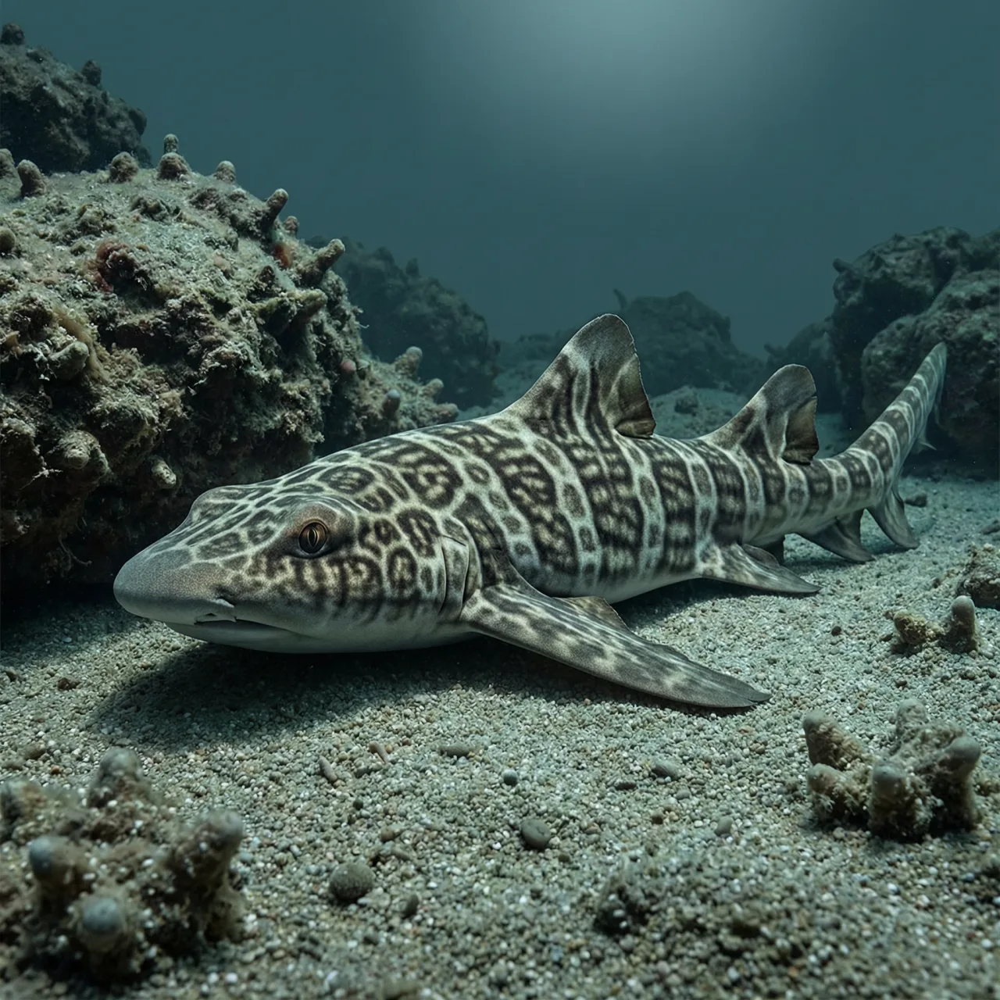
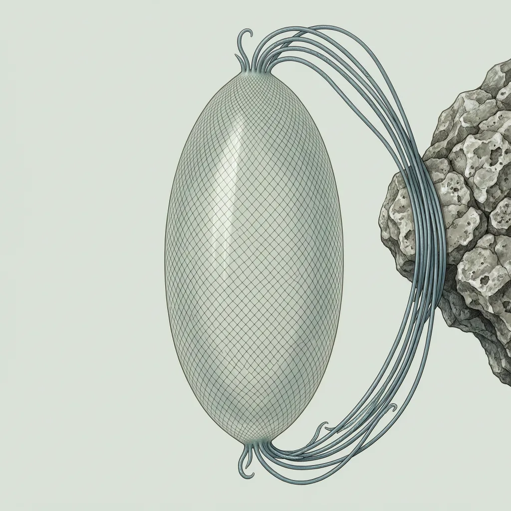

网纹绒毛鲨是南海与东海南部的一种小型猫鲨，记录到的深度在220米至450米之间。它体表有网状花纹，卵鞘两端的缠绕丝能把自己拴在礁区基底上。这种繁殖让它高度依赖礁区结构，而近岸底拖网与栖息地退化正在拆掉它立足的地方，IUCN 将其列为极危。
220 米，是网纹绒毛鲨在南海与东海南部被记录到的最浅处；再往下，到 450 米。这一层水体贴着海底，光线已经很弱，是底栖生物的地盘。网纹绒毛鲨不在开阔水层里洄游，它守着这一段深度的海底，体表的网状花纹与斑驳底质颜色接近，静止时不容易被认出来。它为什么偏偏待在这条深度带里，公开资料没有交代。
网纹绒毛鲨不直接产仔，它产下的是带壳的卵鞘。卵鞘两端各长出缠绕丝，产出之后缠在礁区凸出的硬物上，把鞘固定住，这样就不会被水流冲走或翻倒。幼鲨在壳里慢慢发育，水从鞘口流过，带来氧气、带走废物。这套做法的要害是必须有所依附：卵鞘挂不住的地方，就没有产房。
网纹绒毛鲨 1966 年由 W. L. Y. Chan 描述并命名。六十多年过去，公开资料里能确认的仍然只有三件事：它属于绒毛鲨属，分布在南海与东海南部，出现在 220 米至 450 米的海底。体长、体重、寿命、食性，几栏都是空的；红色名录那一栏却已经填上了极危。把它推下去的主要是近岸的底拖网与栖息地退化——网具贴着海底走，硬物被刮平，卵鞘就无处可挂。从极危再往下两档，就是灭绝。
